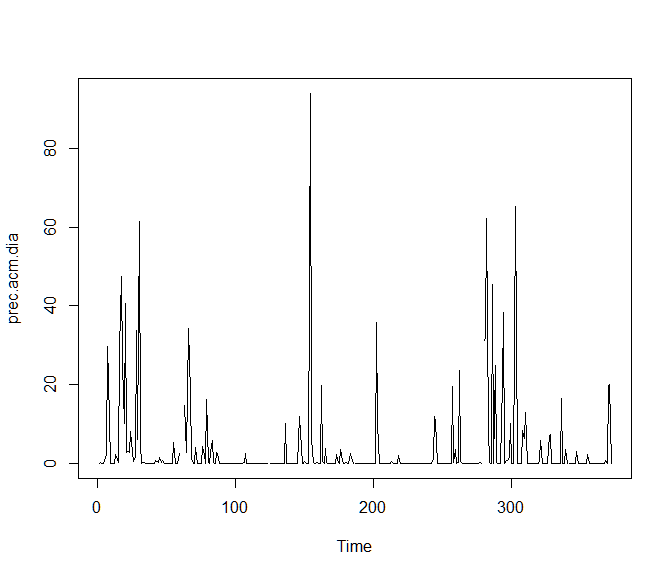
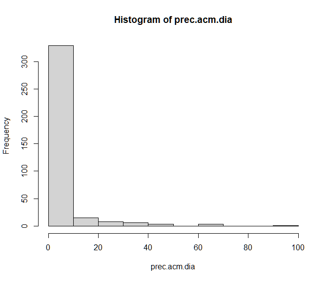
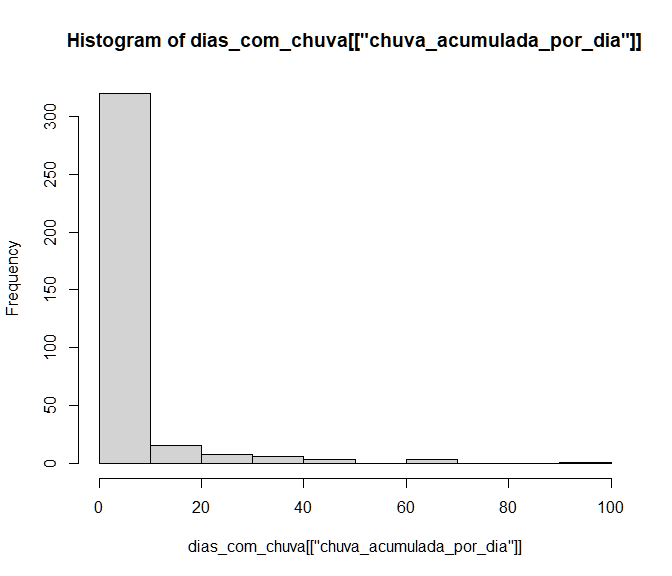
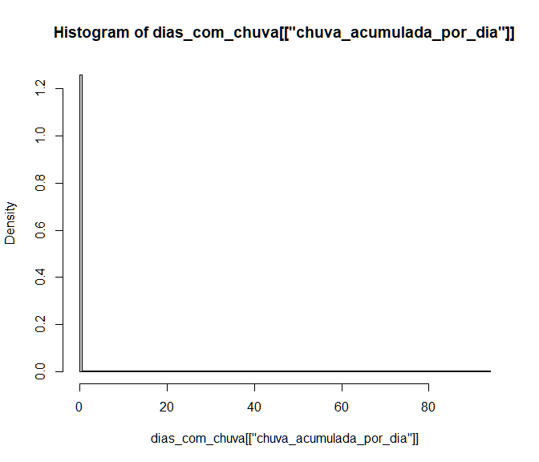

Abril/2022
remove(list=ls())
options(digits=22)library(magrittr)
dados <- read.table(file = "INMET_S_PR_A835_MARINGA_01-01-2021_A_31-12-2021.CSV",
skip = 8, sep = ";", header = T)
dados %>% str()## 'data.frame': 8760 obs. of 20 variables:
## $ Data : chr "2021/01/01" "2021/01/01" "2021/01/01" "2021/01/01" ...
## $ Hora.UTC : chr "0000 UTC" "0100 UTC" "0200 UTC" "0300 UTC" ...
## $ PRECIPITAÃ.ÃO.TOTAL..HORÃ.RIO..mm. : chr "0" "0" "0" "0" ...
## $ PRESSAO.ATMOSFERICA.AO.NIVEL.DA.ESTACAO..HORARIA..mB.: chr "952" "952,2" "951,6" "951,3" ...
## $ PRESSÃO.ATMOSFERICA.MAX.NA.HORA.ANT...AUT...mB. : chr "952" "952,3" "952,3" "951,6" ...
## $ PRESSÃO.ATMOSFERICA.MIN..NA.HORA.ANT...AUT...mB. : chr "951,4" "951,8" "951,6" "951,2" ...
## $ RADIACAO.GLOBAL..Kj.m². : chr "" "" "" "" ...
## $ TEMPERATURA.DO.AR...BULBO.SECO..HORARIA..Â.C. : chr "22,1" "21,7" "21,6" "21,2" ...
## $ TEMPERATURA.DO.PONTO.DE.ORVALHO..Â.C. : chr "20,6" "20,5" "20,4" "20,2" ...
## $ TEMPERATURA.MÃ.XIMA.NA.HORA.ANT...AUT...Â.C. : chr "23,3" "22,1" "21,8" "21,6" ...
## $ TEMPERATURA.MÃ.NIMA.NA.HORA.ANT...AUT...Â.C. : chr "22,1" "21,7" "21,6" "21,2" ...
## $ TEMPERATURA.ORVALHO.MAX..NA.HORA.ANT...AUT...Â.C. : chr "20,7" "20,6" "20,6" "20,4" ...
## $ TEMPERATURA.ORVALHO.MIN..NA.HORA.ANT...AUT...Â.C. : chr "19,6" "20,5" "20,4" "20,2" ...
## $ UMIDADE.REL..MAX..NA.HORA.ANT...AUT..... : int 92 93 93 94 94 93 94 94 93 94 ...
## $ UMIDADE.REL..MIN..NA.HORA.ANT...AUT..... : int 80 92 93 93 93 91 93 93 93 92 ...
## $ UMIDADE.RELATIVA.DO.AR..HORARIA.... : int 92 93 93 94 93 93 94 93 93 94 ...
## $ VENTO..DIREÃ.ÃO.HORARIA..gr...Â...gr.. : int 124 104 133 2 23 23 111 87 60 68 ...
## $ VENTO..RAJADA.MAXIMA..m.s. : chr "5,7" "5,7" "3,7" "2,3" ...
## $ VENTO..VELOCIDADE.HORARIA..m.s. : chr "2,8" "2" ",9" "0" ...
## $ X : logi NA NA NA NA NA NA ...dados %>% head(10) ## Data Hora.UTC PRECIPITAÃ.ÃO.TOTAL..HORÃ.RIO..mm.
## 1 2021/01/01 0000 UTC 0
## 2 2021/01/01 0100 UTC 0
## 3 2021/01/01 0200 UTC 0
## 4 2021/01/01 0300 UTC 0
## 5 2021/01/01 0400 UTC 0
## 6 2021/01/01 0500 UTC 0
## 7 2021/01/01 0600 UTC 0
## 8 2021/01/01 0700 UTC 0
## 9 2021/01/01 0800 UTC 0
## 10 2021/01/01 0900 UTC 0
## PRESSAO.ATMOSFERICA.AO.NIVEL.DA.ESTACAO..HORARIA..mB.
## 1 952
## 2 952,2
## 3 951,6
## 4 951,3
## 5 951,1
## 6 950,6
## 7 950,5
## 8 951
## 9 951,7
## 10 952
## PRESSÃO.ATMOSFERICA.MAX.NA.HORA.ANT...AUT...mB.
## 1 952
## 2 952,3
## 3 952,3
## 4 951,6
## 5 951,3
## 6 951,1
## 7 950,6
## 8 951
## 9 951,7
## 10 952
## PRESSÃO.ATMOSFERICA.MIN..NA.HORA.ANT...AUT...mB. RADIACAO.GLOBAL..Kj.m².
## 1 951,4
## 2 951,8
## 3 951,6
## 4 951,2
## 5 951
## 6 950,6
## 7 950,4
## 8 950,5
## 9 951
## 10 951,6 29,1
## TEMPERATURA.DO.AR...BULBO.SECO..HORARIA..Â.C.
## 1 22,1
## 2 21,7
## 3 21,6
## 4 21,2
## 5 21,5
## 6 20,8
## 7 21,1
## 8 21,1
## 9 21
## 10 20,7
## TEMPERATURA.DO.PONTO.DE.ORVALHO..Â.C.
## 1 20,6
## 2 20,5
## 3 20,4
## 4 20,2
## 5 20,3
## 6 19,6
## 7 20,1
## 8 19,9
## 9 19,8
## 10 19,6
## TEMPERATURA.MÃ.XIMA.NA.HORA.ANT...AUT...Â.C.
## 1 23,3
## 2 22,1
## 3 21,8
## 4 21,6
## 5 21,5
## 6 21,6
## 7 21,1
## 8 21,2
## 9 21,1
## 10 21,1
## TEMPERATURA.MÃ.NIMA.NA.HORA.ANT...AUT...Â.C.
## 1 22,1
## 2 21,7
## 3 21,6
## 4 21,2
## 5 21,2
## 6 20,7
## 7 20,6
## 8 21
## 9 20,9
## 10 20,4
## TEMPERATURA.ORVALHO.MAX..NA.HORA.ANT...AUT...Â.C.
## 1 20,7
## 2 20,6
## 3 20,6
## 4 20,4
## 5 20,5
## 6 20,3
## 7 20,1
## 8 20,1
## 9 19,9
## 10 19,8
## TEMPERATURA.ORVALHO.MIN..NA.HORA.ANT...AUT...Â.C.
## 1 19,6
## 2 20,5
## 3 20,4
## 4 20,2
## 5 20,1
## 6 19,5
## 7 19,5
## 8 19,9
## 9 19,7
## 10 19,2
## UMIDADE.REL..MAX..NA.HORA.ANT...AUT.....
## 1 92
## 2 93
## 3 93
## 4 94
## 5 94
## 6 93
## 7 94
## 8 94
## 9 93
## 10 94
## UMIDADE.REL..MIN..NA.HORA.ANT...AUT..... UMIDADE.RELATIVA.DO.AR..HORARIA....
## 1 80 92
## 2 92 93
## 3 93 93
## 4 93 94
## 5 93 93
## 6 91 93
## 7 93 94
## 8 93 93
## 9 93 93
## 10 92 94
## VENTO..DIREÃ.ÃO.HORARIA..gr...Â...gr.. VENTO..RAJADA.MAXIMA..m.s.
## 1 124 5,7
## 2 104 5,7
## 3 133 3,7
## 4 2 2,3
## 5 23 1,6
## 6 23 1,1
## 7 111 1,5
## 8 87 2
## 9 60 2,2
## 10 68 2
## VENTO..VELOCIDADE.HORARIA..m.s. X
## 1 2,8 NA
## 2 2 NA
## 3 ,9 NA
## 4 0 NA
## 5 ,2 NA
## 6 ,2 NA
## 7 ,1 NA
## 8 ,1 NA
## 9 ,9 NA
## 10 ,1 NAnames(dados) <- c("Data","hora","precp","press","pressmax","pressmin", names(dados[-c(1:6)]))
names(dados) <- gsub("\\.", "", names(dados))
head(dados)## Data hora precp press pressmax pressmin RADIACAOGLOBALKjm²
## 1 2021/01/01 0000 UTC 0 952 952 951,4
## 2 2021/01/01 0100 UTC 0 952,2 952,3 951,8
## 3 2021/01/01 0200 UTC 0 951,6 952,3 951,6
## 4 2021/01/01 0300 UTC 0 951,3 951,6 951,2
## 5 2021/01/01 0400 UTC 0 951,1 951,3 951
## 6 2021/01/01 0500 UTC 0 950,6 951,1 950,6
## TEMPERATURADOARBULBOSECOHORARIAÂC TEMPERATURADOPONTODEORVALHOÂC
## 1 22,1 20,6
## 2 21,7 20,5
## 3 21,6 20,4
## 4 21,2 20,2
## 5 21,5 20,3
## 6 20,8 19,6
## TEMPERATURAMÃXIMANAHORAANTAUTÂC TEMPERATURAMÃNIMANAHORAANTAUTÂC
## 1 23,3 22,1
## 2 22,1 21,7
## 3 21,8 21,6
## 4 21,6 21,2
## 5 21,5 21,2
## 6 21,6 20,7
## TEMPERATURAORVALHOMAXNAHORAANTAUTÂC TEMPERATURAORVALHOMINNAHORAANTAUTÂC
## 1 20,7 19,6
## 2 20,6 20,5
## 3 20,6 20,4
## 4 20,4 20,2
## 5 20,5 20,1
## 6 20,3 19,5
## UMIDADERELMAXNAHORAANTAUT UMIDADERELMINNAHORAANTAUT
## 1 92 80
## 2 93 92
## 3 93 93
## 4 94 93
## 5 94 93
## 6 93 91
## UMIDADERELATIVADOARHORARIA VENTODIREÃÃOHORARIAgrÂgr VENTORAJADAMAXIMAms
## 1 92 124 5,7
## 2 93 104 5,7
## 3 93 133 3,7
## 4 94 2 2,3
## 5 93 23 1,6
## 6 93 23 1,1
## VENTOVELOCIDADEHORARIAms X
## 1 2,8 NA
## 2 2 NA
## 3 ,9 NA
## 4 0 NA
## 5 ,2 NA
## 6 ,2 NAdados$nada <- NULL
dados$X <- NULL
dados %>% head(10)## Data hora precp press pressmax pressmin RADIACAOGLOBALKjm²
## 1 2021/01/01 0000 UTC 0 952 952 951,4
## 2 2021/01/01 0100 UTC 0 952,2 952,3 951,8
## 3 2021/01/01 0200 UTC 0 951,6 952,3 951,6
## 4 2021/01/01 0300 UTC 0 951,3 951,6 951,2
## 5 2021/01/01 0400 UTC 0 951,1 951,3 951
## 6 2021/01/01 0500 UTC 0 950,6 951,1 950,6
## 7 2021/01/01 0600 UTC 0 950,5 950,6 950,4
## 8 2021/01/01 0700 UTC 0 951 951 950,5
## 9 2021/01/01 0800 UTC 0 951,7 951,7 951
## 10 2021/01/01 0900 UTC 0 952 952 951,6 29,1
## TEMPERATURADOARBULBOSECOHORARIAÂC TEMPERATURADOPONTODEORVALHOÂC
## 1 22,1 20,6
## 2 21,7 20,5
## 3 21,6 20,4
## 4 21,2 20,2
## 5 21,5 20,3
## 6 20,8 19,6
## 7 21,1 20,1
## 8 21,1 19,9
## 9 21 19,8
## 10 20,7 19,6
## TEMPERATURAMÃXIMANAHORAANTAUTÂC TEMPERATURAMÃNIMANAHORAANTAUTÂC
## 1 23,3 22,1
## 2 22,1 21,7
## 3 21,8 21,6
## 4 21,6 21,2
## 5 21,5 21,2
## 6 21,6 20,7
## 7 21,1 20,6
## 8 21,2 21
## 9 21,1 20,9
## 10 21,1 20,4
## TEMPERATURAORVALHOMAXNAHORAANTAUTÂC TEMPERATURAORVALHOMINNAHORAANTAUTÂC
## 1 20,7 19,6
## 2 20,6 20,5
## 3 20,6 20,4
## 4 20,4 20,2
## 5 20,5 20,1
## 6 20,3 19,5
## 7 20,1 19,5
## 8 20,1 19,9
## 9 19,9 19,7
## 10 19,8 19,2
## UMIDADERELMAXNAHORAANTAUT UMIDADERELMINNAHORAANTAUT
## 1 92 80
## 2 93 92
## 3 93 93
## 4 94 93
## 5 94 93
## 6 93 91
## 7 94 93
## 8 94 93
## 9 93 93
## 10 94 92
## UMIDADERELATIVADOARHORARIA VENTODIREÃÃOHORARIAgrÂgr VENTORAJADAMAXIMAms
## 1 92 124 5,7
## 2 93 104 5,7
## 3 93 133 3,7
## 4 94 2 2,3
## 5 93 23 1,6
## 6 93 23 1,1
## 7 94 111 1,5
## 8 93 87 2
## 9 93 60 2,2
## 10 94 68 2
## VENTOVELOCIDADEHORARIAms
## 1 2,8
## 2 2
## 3 ,9
## 4 0
## 5 ,2
## 6 ,2
## 7 ,1
## 8 ,1
## 9 ,9
## 10 ,1dados$Data <- as.Date(dados$Data, format = "%Y/%m/%d")dados$dia <- format(dados$Data, format = "%d") %>% as.numeric()
dados$mes <- format(dados$Data, format = "%m") %>% as.numeric()
dados$ano <- format(dados$Data, format = "%Y") %>% as.numeric()dados.lista <- with(dados, split(dados, mes))
length(dados.lista)## [1] 12# ou
dados.lista <- list()
for(i in 1:12){
dados.lista[[i]] <- dados[dados$mes == i, ]
}
length(dados.lista)## [1] 12for(i in 1:12){
externo <- paste0(tolower(month.abb[i]), ".csv")
print(paste("Arquivo",externo,"exportado!"))
write.table(x = dados.lista[[i]],
file = externo,
sep = ";",
na = ".",
row.names = TRUE)
}## [1] "Arquivo jan.csv exportado!"
## [1] "Arquivo feb.csv exportado!"
## [1] "Arquivo mar.csv exportado!"
## [1] "Arquivo apr.csv exportado!"
## [1] "Arquivo may.csv exportado!"
## [1] "Arquivo jun.csv exportado!"
## [1] "Arquivo jul.csv exportado!"
## [1] "Arquivo aug.csv exportado!"
## [1] "Arquivo sep.csv exportado!"
## [1] "Arquivo oct.csv exportado!"
## [1] "Arquivo nov.csv exportado!"
## [1] "Arquivo dec.csv exportado!"dim(dados)## [1] 8760 22lapply(1:12, function(i) dim(dados.lista[[i]]))## [[1]]
## [1] 744 22
##
## [[2]]
## [1] 672 22
##
## [[3]]
## [1] 744 22
##
## [[4]]
## [1] 720 22
##
## [[5]]
## [1] 744 22
##
## [[6]]
## [1] 720 22
##
## [[7]]
## [1] 744 22
##
## [[8]]
## [1] 744 22
##
## [[9]]
## [1] 720 22
##
## [[10]]
## [1] 744 22
##
## [[11]]
## [1] 720 22
##
## [[12]]
## [1] 744 22# sapply(1:12, function(i) dim(dados.lista[[i]]))dados$precp <- gsub(",",".",dados$precp) %>% as.numeric()
with(dados, tapply(precp, dia, sum, na.rm=T))## 1 2 3
## 48.2000000000000028 34.7999999999999972 80.4000000000000057
## 4 5 6
## 43.0000000000000000 18.8000000000000007 6.4000000000000004
## 7 8 9
## 94.7999999999999972 22.0000000000000000 48.3999999999999986
## 10 11 12
## 5.0000000000000000 10.1999999999999993 10.5999999999999996
## 13 14 15
## 2.7999999999999998 55.6000000000000014 41.3999999999999986
## 16 17 18
## 65.2000000000000028 81.7999999999999972 35.2000000000000028
## 19 20 21
## 12.4000000000000004 53.3999999999999986 12.0000000000000000
## 22 23 24
## 15.7999999999999989 40.2000000000000028 81.5999999999999943
## 25 26 27
## 5.6000000000000005 18.3999999999999986 14.4000000000000004
## 28 29 30
## 49.3999999999999986 39.3999999999999986 181.8000000000000114
## 31
## 24.1999999999999993(unique(cbind(dados$dia,dados$mes))[,1] %>% table())## .
## 1 2 3 4 5 6 7 8 9 10 11 12 13 14 15 16 17 18 19 20 21 22 23 24 25 26
## 12 12 12 12 12 12 12 12 12 12 12 12 12 12 12 12 12 12 12 12 12 12 12 12 12 12
## 27 28 29 30 31
## 12 12 11 11 7(dados1 <- with(dados, tapply(precp, dia, sum, na.rm=T)) / (unique(cbind(dados$dia,dados$mes))[,1] %>% table()) )## 1 2 3
## 4.01666666666666661 2.89999999999999991 6.70000000000000018
## 4 5 6
## 3.58333333333333348 1.56666666666666665 0.53333333333333333
## 7 8 9
## 7.89999999999999947 1.83333333333333326 4.03333333333333321
## 10 11 12
## 0.41666666666666669 0.84999999999999998 0.88333333333333330
## 13 14 15
## 0.23333333333333331 4.63333333333333375 3.44999999999999973
## 16 17 18
## 5.43333333333333357 6.81666666666666643 2.93333333333333357
## 19 20 21
## 1.03333333333333344 4.45000000000000018 1.00000000000000000
## 22 23 24
## 1.31666666666666665 3.35000000000000009 6.79999999999999982
## 25 26 27
## 0.46666666666666673 1.53333333333333321 1.19999999999999996
## 28 29 30
## 4.11666666666666625 3.58181818181818157 16.52727272727272734
## 31
## 3.45714285714285685# 24.1999999999999993 / 7with(dados, tapply(precp, mes, sum, na.rm=T))## 1 2 3
## 337.3999999999999773 11.8000000000000007 129.5999999999999943
## 4 5 6
## 2.7999999999999998 130.5999999999999943 36.0000000000000000
## 7 8 9
## 46.3999999999999986 25.8000000000000007 47.6000000000000014
## 10 11 12
## 398.8000000000000114 40.7999999999999972 45.6000000000000014# precipitação média por hora dentro de cada mês
with(dados, tapply(precp, mes, mean, na.rm=T))## 1 2 3
## 0.4534946236559139754 0.0175595238095238096 0.1741935483870967749
## 4 5 6
## 0.0038888888888888888 0.1755376344086021501 0.0511363636363636326
## 7 8 9
## 0.0652601969057665238 0.0346774193548387080 0.0661111111111111066
## 10 11 12
## 0.5360215053763440762 0.0566666666666666707 0.0612903225806451582# 337.39 / (31 * 24)
# precipitação média por dia dentro de cada mês
(with(dados, tapply(precp, mes, mean, na.rm=T))*24)## 1 2 3
## 10.883870967741934521 0.421428571428571430 4.180645161290322598
## 4 5 6
## 0.093333333333333324 4.212903225806451601 1.227272727272727071
## 7 8 9
## 1.566244725738396681 0.832258064516129048 1.586666666666666448
## 10 11 12
## 12.864516129032256941 1.360000000000000098 1.470967741935483852with(dados, tapply(precp, mes, sum, na.rm=T))## 1 2 3
## 337.3999999999999773 11.8000000000000007 129.5999999999999943
## 4 5 6
## 2.7999999999999998 130.5999999999999943 36.0000000000000000
## 7 8 9
## 46.3999999999999986 25.8000000000000007 47.6000000000000014
## 10 11 12
## 398.8000000000000114 40.7999999999999972 45.6000000000000014(unique(cbind(dados$mes,dados$ano))[,1] %>% table())## .
## 1 2 3 4 5 6 7 8 9 10 11 12
## 1 1 1 1 1 1 1 1 1 1 1 1prec.acm.dia <- with(dados, tapply(precp, interaction(dia, mes), sum, na.rm = T))
ts.plot(prec.acm.dia)
hist(prec.acm.dia)
# precipitação média por mês
# Como cada mês refere-se somente a um ano (2021),
# então o valor médio por mês equivale a soma
# do valor precipitado no mês
(dados2 <- with(dados, tapply(precp, mes, sum, na.rm=T)) / (unique(cbind(dados$mes,dados$ano))[,1] %>% table()) )## 1 2 3
## 337.3999999999999773 11.8000000000000007 129.5999999999999943
## 4 5 6
## 2.7999999999999998 130.5999999999999943 36.0000000000000000
## 7 8 9
## 46.3999999999999986 25.8000000000000007 47.6000000000000014
## 10 11 12
## 398.8000000000000114 40.7999999999999972 45.6000000000000014(dados2 <- with(dados, tapply(precp, mes, sum, na.rm=T)))## 1 2 3
## 337.3999999999999773 11.8000000000000007 129.5999999999999943
## 4 5 6
## 2.7999999999999998 130.5999999999999943 36.0000000000000000
## 7 8 9
## 46.3999999999999986 25.8000000000000007 47.6000000000000014
## 10 11 12
## 398.8000000000000114 40.7999999999999972 45.6000000000000014# em construçãodados <- dados[order(dados[,"Data"],dados[,"hora"]),]
dados4 <- dados[,c("Data","hora","precp")]
dados4 <- dados4 %>%
dplyr::group_by(Data) %>%
dplyr::mutate(precp_acum = cumsum(precp))
dados4## # A tibble: 8,760 x 4
## # Groups: Data [365]
## Data hora precp precp_acum
## <date> <chr> <dbl> <dbl>
## 1 2021-01-01 0000 UTC 0 0
## 2 2021-01-01 0100 UTC 0 0
## 3 2021-01-01 0200 UTC 0 0
## 4 2021-01-01 0300 UTC 0 0
## 5 2021-01-01 0400 UTC 0 0
## 6 2021-01-01 0500 UTC 0 0
## 7 2021-01-01 0600 UTC 0 0
## 8 2021-01-01 0700 UTC 0 0
## 9 2021-01-01 0800 UTC 0 0
## 10 2021-01-01 0900 UTC 0 0
## # ... with 8,750 more rowsdias_com_chuva <- dados4 %>%
dplyr::group_by(Data) %>%
dplyr::summarize(chuva_acumulada_por_dia = max(precp_acum)) %>%
dplyr::mutate(Dia_com_chuva = ifelse(is.na(chuva_acumulada_por_dia),FALSE,I(chuva_acumulada_por_dia>0) ))
dias_com_chuva %>% head(10)## # A tibble: 10 x 3
## Data chuva_acumulada_por_dia Dia_com_chuva
## <date> <dbl> <lgl>
## 1 2021-01-01 0 FALSE
## 2 2021-01-02 0.2 TRUE
## 3 2021-01-03 0 FALSE
## 4 2021-01-04 0 FALSE
## 5 2021-01-05 0.8 TRUE
## 6 2021-01-06 2.2 TRUE
## 7 2021-01-07 29.6 TRUE
## 8 2021-01-08 21.6 TRUE
## 9 2021-01-09 0 FALSE
## 10 2021-01-10 0 FALSEdias_com_chuva %>% dplyr::pull(Dia_com_chuva) %>% head(10)## [1] FALSE TRUE FALSE FALSE TRUE TRUE TRUE TRUE FALSE FALSEh <- hist(dias_com_chuva[["chuva_acumulada_por_dia"]], breaks = 10)
h## $breaks
## [1] 0 10 20 30 40 50 60 70 80 90 100
##
## $counts
## [1] 320 15 8 6 3 0 3 0 0 1
##
## $density
## [1] 0.08988764044943819975 0.00421348314606741561 0.00224719101123595525
## [4] 0.00168539325842696633 0.00084269662921348317 0.00000000000000000000
## [7] 0.00084269662921348317 0.00000000000000000000 0.00000000000000000000
## [10] 0.00028089887640449441
##
## $mids
## [1] 5 15 25 35 45 55 65 75 85 95
##
## $xname
## [1] "dias_com_chuva[[\"chuva_acumulada_por_dia\"]]"
##
## $equidist
## [1] TRUE
##
## attr(,"class")
## [1] "histogram"tab <- agricolae::table.freq(h)
tab## Lower Upper Main Frequency Percentage CF CPF
## 1 0 10 5 320 89.90000000000000568 320 89.900000000000006
## 2 10 20 15 15 4.20000000000000018 335 94.099999999999994
## 3 20 30 25 8 2.20000000000000018 343 96.299999999999997
## 4 30 40 35 6 1.69999999999999996 349 98.000000000000000
## 5 40 50 45 3 0.80000000000000004 352 98.900000000000006
## 6 50 60 55 0 0.00000000000000000 352 98.900000000000006
## 7 60 70 65 3 0.80000000000000004 355 99.700000000000003
## 8 70 80 75 0 0.00000000000000000 355 99.700000000000003
## 9 80 90 85 0 0.00000000000000000 355 99.700000000000003
## 10 90 100 95 1 0.29999999999999999 356 100.000000000000000k <- fivenum(dias_com_chuva[["chuva_acumulada_por_dia"]])
h_fivenum <- hist(dias_com_chuva[["chuva_acumulada_por_dia"]], breaks = k[-c(1:2)])
h_fivenum## $breaks
## [1] 0.00000000000000000 0.60000000000000009 94.00000000000000000
##
## $counts
## [1] 269 87
##
## $density
## [1] 1.2593632958801497246 0.0026165098765729131
##
## $mids
## [1] 0.30000000000000004 47.29999999999999716
##
## $xname
## [1] "dias_com_chuva[[\"chuva_acumulada_por_dia\"]]"
##
## $equidist
## [1] FALSE
##
## attr(,"class")
## [1] "histogram"# em construção